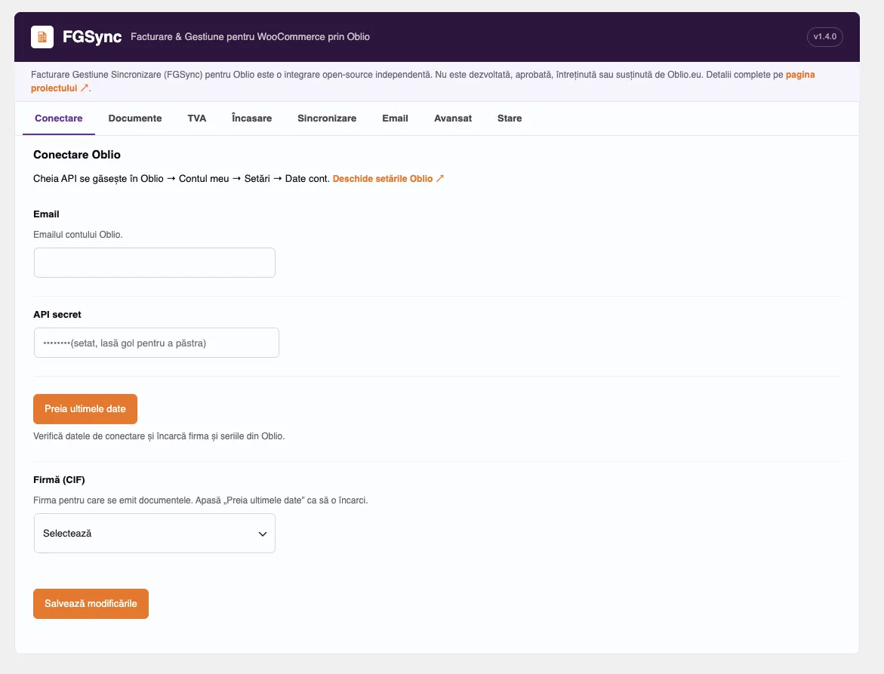
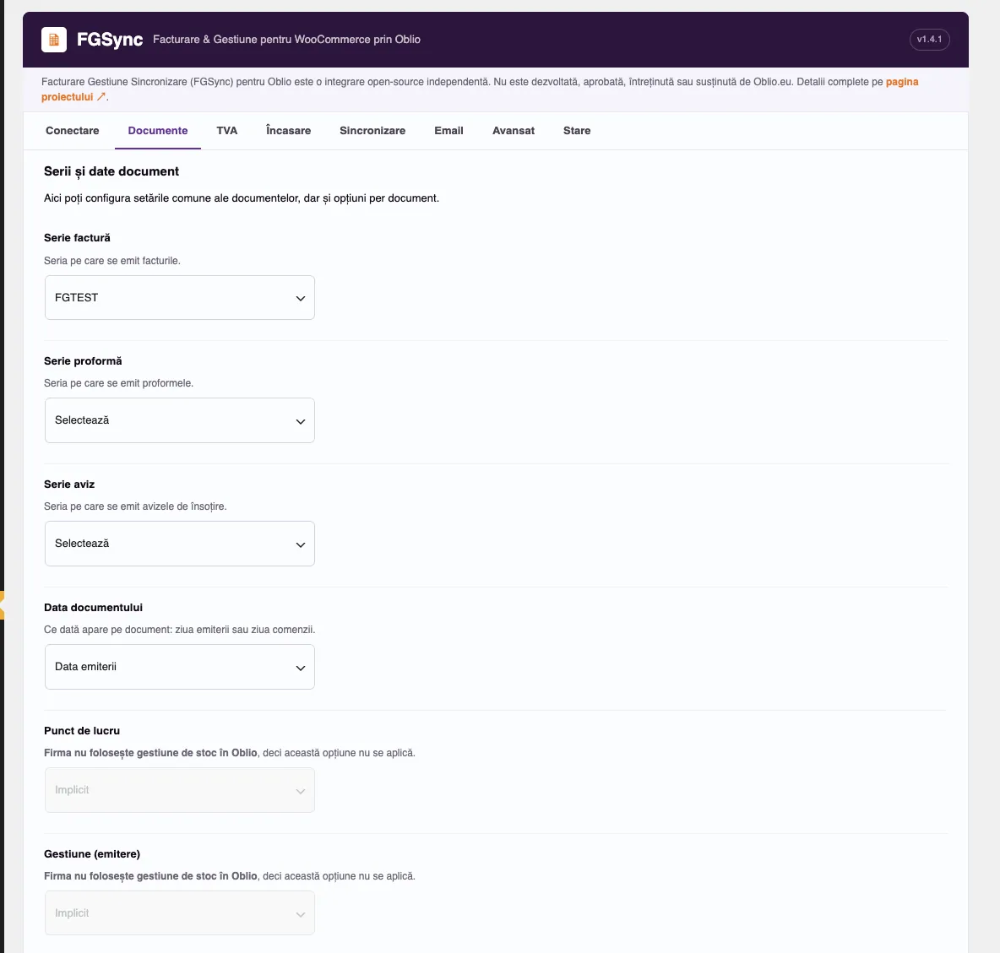
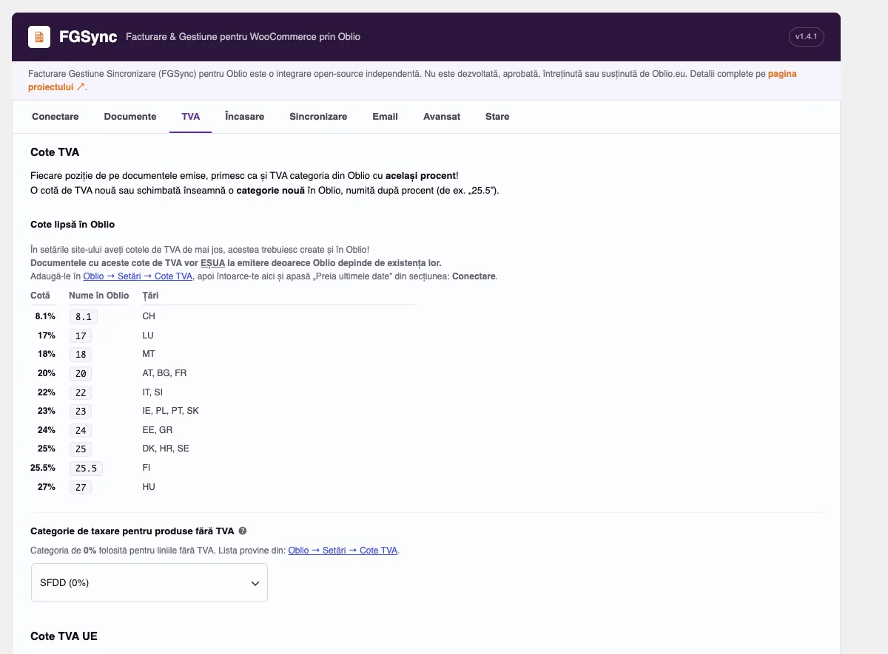
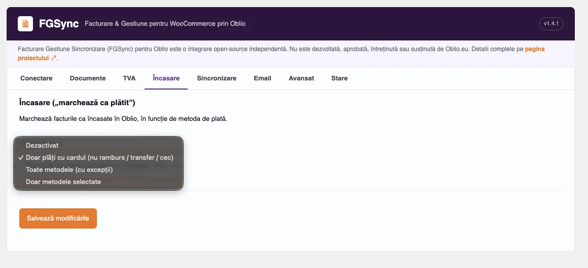
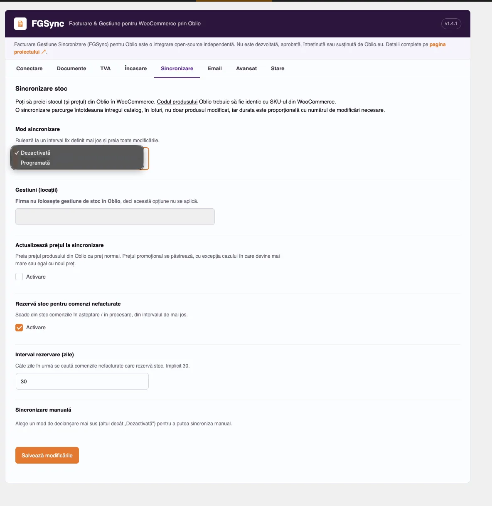
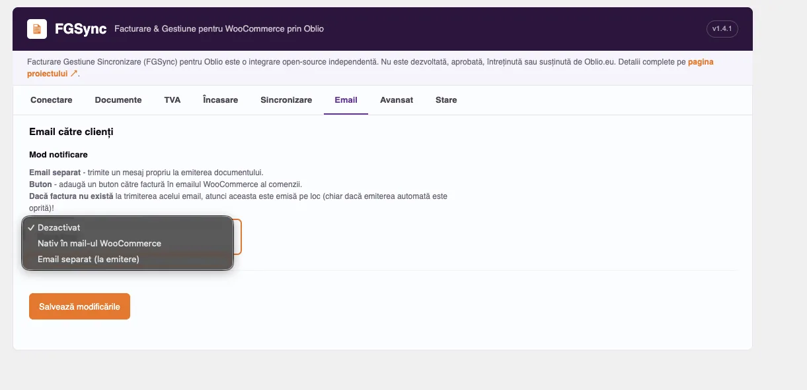
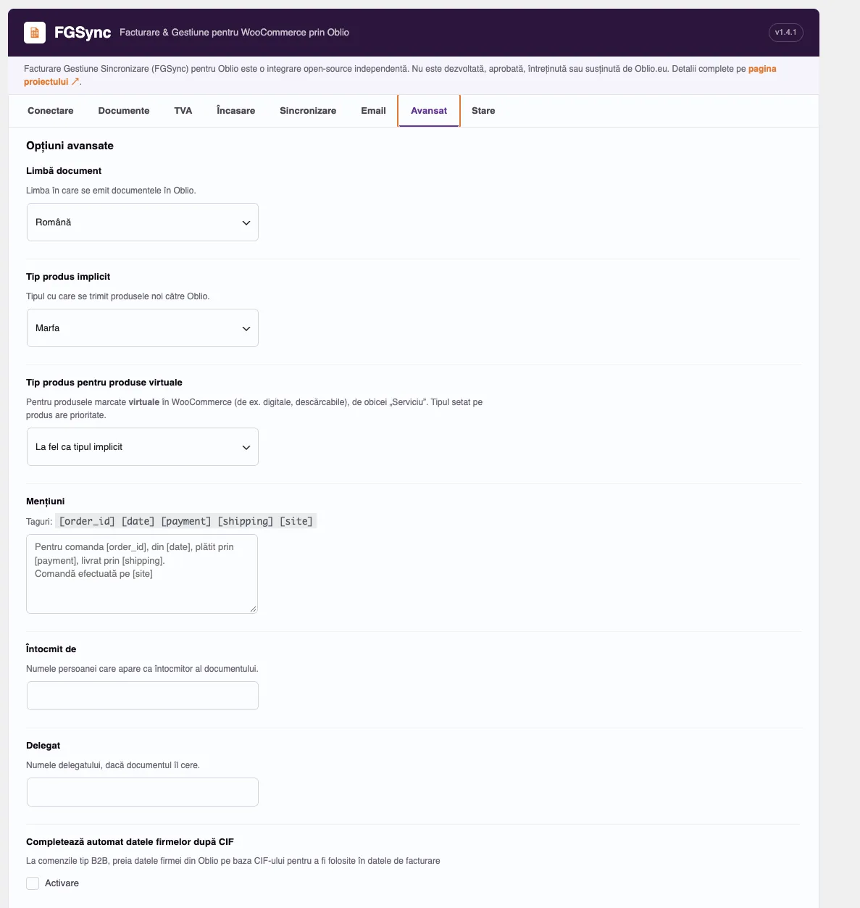
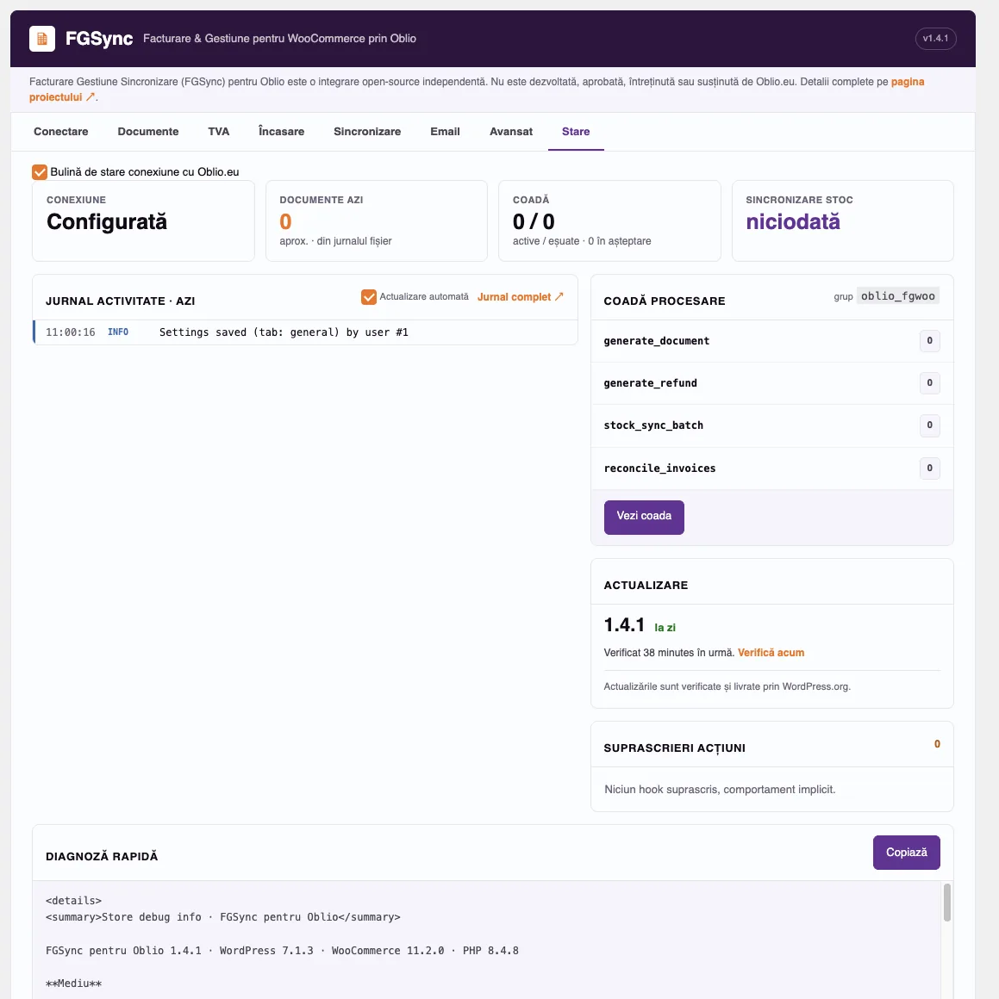

Oblio WooCommerce: facturare și stoc sincronizate automat
Oblio.eu este un serviciu românesc de facturare și gestiune a stocurilor. FGSync (Facturare Gestiune Sincronizare) este pluginul care permite conectarea și emiterea documentelor Oblio din comenzile WooCommerce, menține stocul WooCommerce sincronizat cu gestiunea/gestiunile din Oblio: facturi, proforme, avize și storno automate, plus sincronizare stoc pe mai multe gestiuni, fără să încetinească website-ul în vreun fel.
Aceasta este o reconstrucție independentă, nu un fork/derivat, scrisă pentru magazinele unde cererile sincrone ale pluginului original „WooCommerce Oblio” au devenit un blocaj. Noua variantă este o reinventare modernă prin cod scris de la zero, PHP 8.1+ cu tipare stricte, testat cu PHPUnit, cu emiterea documentelor și sincronizarea stocului rulând pe grupuri (schedulers - Action Scheduler).


Pornește o instalare WordPress temporară, direct în browser, cu WooCommerce și FGSync deja instalate și activate, moneda setată pe RON și țara magazinului pe România, direct pe ecranul de setări FGSync (fără wizard-ul de configurare WooCommerce). Nicio modificare nu e salvată; conectarea la Oblio necesită un cont real.
Plugin open-source independent, nedezvoltat, neaprobat și nesusținut (explicit) de Oblio.eu. Oblio este un serviciu terț, este necesar un cont Oblio activ.
Funcționalități
Tot ce e nevoie pentru a factura prin Oblio fără să încetinești magazinul tău WooCommerce.
Documente
- Facturi, proforme, avize (notă de livrare) și storno, automat sau manual din ecranul comenzii
- O proformă se transformă în factură sau se șterge. Nu se emite niciodată o proformă după ce există deja o factură
- Factură și la confirmarea plății online (opțional). Pentru o comandă cu aviz, factura se emite pe baza avizului, deci stocul se descarcă o singură dată
- Fără proforme pentru comenzile deja plătite online: proforma e o cerere de plată
- Storno automat la rambursările din WooCommerce, integral sau parțial. Rambursările făcute înainte de factură sunt scăzute din factură, fără storno separat
- Clienții își văd facturile și stornourile în secțiunea „Facturi” din contul lor
- Produsele virtuale (digitale) pot primi propriul tip, de ex. „Serviciu”, iar conturile Oblio fără gestiuni sunt suportate, cu facturi emise fără descărcare din stoc
TVA
- Fiecare linie primește categoria TVA exactă din contul Oblio, potrivită după cotă (inclusiv 25,5% sau 5,5%)
- Tabul TVA listează cotele fără categorie în Oblio, cu numele recomandat, înainte să eșueze o factură
- Categoria 0% pentru liniile fără TVA se alege din setări
- Import opțional al cotelor TVA standard pentru cele 27 de state UE
- Persoană fizică / juridică din pluginul gratuit „Facturare - Persoana Fizica sau Juridica”
Performanță
- Procesare pe coadă (Action Scheduler): emiterea nu blochează niciodată checkout-ul sau schimbările de status
- Reîncercare automată cu backoff, plus un job recurent de reconciliere pentru facturile omise
- Acțiunile în masă (factură/proformă/storno pentru mai multe comenzi) sunt puse în coadă per comandă, nu rulate secvențial
Sincronizare stoc
- Sincronizare pe loturi, pe una sau mai multe gestiuni Oblio, potrivite după SKU
- Interval configurabil (orar, la 6h, la 12h, zilnic) sau manual, cu bară de progres
- Scrie doar produsele al căror stoc sau preț chiar s-a schimbat
Încasare și notificări
- Încasare automată ("marcat ca plătit"), configurabilă pe metodă de plată
- Notificare client prin email standalone sau buton în emailurile proprii ale WooCommerce
Compatibilitate
- HPOS (High-Performance Order Storage) și stocare clasică a comenzilor
- WPML / WooCommerce Multilingual: limba și moneda facturii urmează comanda
- WooCommerce Bundles: componentele sunt facturate, iar prețul fix al pachetului se împarte pe ele
- Documente în EUR pentru clienții din afara României
Extensibilitate
- 23 de filtre și hook-uri proprii, acoperind facturare, stoc, rezervări, reconciliere, storno și email
- Ajustează o cantitate sau un preț de stoc înainte de scriere, suprascrie moneda sau limba documentului per comandă
- Tabul „Stare” arată hook-urile suprascrise de alte pluginuri și copiază un raport de diagnoză fără date personale
Capturi de ecran
Fiecare tab din setările FGSync. Click pe o captură pentru dimensiunea completă.








FGSync vs. pluginul original „WooCommerce Oblio”
FGSync este o reconstrucție, nu un fork/derivat, scrisă special cu performanța ca și target principal, tocmai pentru a rezolva punctele unde pluginul original blochează / încetinește site-ul.
| Funcționalitate | Integrarea Oblio.eu (pluginul vechi) | FGSync |
|---|---|---|
| Emitere factură | Sincronă, poate bloca cererea până la ~60s | Pe coadă / la rând (Action Scheduler), nu blochează niciodată, cu atât mai puțin checkout-ul! |
| Reîncercare automată la eșec | Lipsește | Automată, cu pauze (eșecuri multiple) |
| Storno (credit note) | Lipsește | Automat la rambursare, integrală sau parțială |
| Aviz (notă de livrare) | Codul există, dar nu e funcțional | Funcțional, iar factura se emite pe baza lui |
| Reconciliere documente omise | Lipsește | Job recurent / Rutină |
| Interval sincronizare stoc | Cron fix, la fiecare oră | Configurabil |
| Sincronizare stoc la scară | O singură execuție care citește și scrie toate produsele: risc de timeout la cataloage mari / încetinire masivă în server | Pe secțiuni, asincron, neblocant cu progres salvat |
| Agregare pe mai multe gestiuni | Lipsește | Disponibilă |
| Limitare rată API Oblio | Doar la paginarea sincronizării de stoc | La fiecare emitere (facturi, proforme, avize, storno) |
| Compatibilitate HPOS | Parțială | Completă |
| WPML / WooCommerce Multilingual | Lipsește | Disponibil |
| WooCommerce Bundles | Lipsește | Componente facturate, prețul fix împărțit pe ele |
| Tip produs pentru produse virtuale | Doar tipul implicit sau setat pe fiecare produs | Tip separat, aplicat automat produselor virtuale |
| Documente în EUR (clienți din afara României) | Lipsește | Setare opțională |
| Cota TVA pe linie | Rotunjită la număr întreg (25,5% devine 26%) | Exactă, cu categoria din contul Oblio |
| Cote TVA lipsă în Oblio | Nicio verificare | Listate în setări, cu mesaj clar la emitere |
| Persoană fizică / juridică | CNP trimis drept CIF, fără bancă și IBAN | PF/PJ, CUI, CNP, Reg. Com., bancă și IBAN |
| Filtre / hook-uri proprii | 2 | 23 |
| Stocare cheie API | Text simplu | Criptată (AES-256-GCM) |
| Filtrare listă comenzi după status Oblio | Lipsește | Disponibilă |
| Monitorizare erori | Lipsește | Disponibilă |
| Bază de cod | Fără versiune minimă de PHP, procedural, fără teste automate | PHP 8.1+, tipare stricte, testat cu PHPUnit |
Comparația completă, funcționalitate cu funcționalitate: vezi README-ul de dezvoltare. O lipsă asumată: webhook-urile Oblio (confirmare plată cu cardul) sunt eliminate temporar din FGSync și revin într-o versiune viitoare.
Cerințe
Este necesar și un cont Oblio.eu activ, cu un secret API. Oblio este un serviciu terț: citiți termenii și condițiile înainte de a conecta datele clienților și comenzilor.
Instalare
- Instalează FGSync for Oblio din directorul de plugin-uri WordPress.org, sau încarcă folderul pluginului în
/wp-content/plugins/. - Activează pluginul din meniul Plugin-uri.
- Deschide setările FGSync (meniul principal din admin), introdu emailul contului Oblio și secretul API, apoi apasă Preia ultimele date ca să încarci firma, seriile și gestiunile.
- Folosești deja vechiul plugin „WooCommerce Oblio”? Folosește butonul Importă setările din tabul Conectare, ca să migrezi fără să reintroduci configurația.
Întrebări frecvente
Acest plugin este realizat sau susținut de Oblio?
Nu. Facturare, Gestiune, Sincronizare pentru Oblio (scurt FGSync) este o integrare independentă, open-source, construită independent. Nu este dezvoltat, aprobat, întreținut sau susținut de Oblio.eu. Oblio este un serviciu terț de facturare, accesat prin API-ul său public; este necesar un cont Oblio activ.
FGSync este compatibil cu HPOS în WooCommerce?
Da, atât cu High-Performance Order Storage (HPOS), cât și cu stocarea clasică a comenzilor (postmeta).
Cum migrez de la vechiul plugin „WooCommerce Oblio”?
În pagina de setări apare un buton „Importă setările” în tabul Conectare. Documentele deja emise prin vechiul plugin sunt recunoscute automat, deci nu se re-emit.
Ce moduri de facturare sunt disponibile?
Trei moduri disponibile, în tabul Documente. „Prin coadă” (implicit) emite factura în câteva secunde de la intrarea comenzii în statusul ales, fără să încetinească acea cerere. „Instant” emite sincron, în aceeași cerere care a schimbat statusul, cu revenire automată la coadă dacă încercarea eșuează. „Programat” emite facturile periodic, util când facturarea se face mai târziu, de exemplu la expediere. Opțional, „Emite și la confirmarea plății” emite factura imediat ce o plată online (card, PayPal etc.) este confirmată. O verificare de reconciliere recheamă periodic comenzile recente și reprogramează orice factură omisă de un hook ratat sau de o pană scurtă în API-ul Oblio.
De ce nu pot șterge o factură Oblio mai veche din WooCommerce?
Oblio permite ștergerea doar a ultimului document emis dintr-o serie. Dacă există deja o factură mai nouă în aceeași serie, butonul de ștergere e ascuns pentru cea veche; emite în schimb un storno pentru a o anula. Proformele sunt excepția și pot fi șterse oricând.
Ce se întâmplă când o țară își schimbă cota de TVA?
Oblio nu permite modificarea unei cote TVA odată folosită pe o factură, așa că adaugi o cotă nouă în Oblio → Setări → Cote TVA, numită după procent (de exemplu „21” lângă „19”), și o păstrezi pe cea veche. Actualizezi apoi cota în WooCommerce, manual sau cu butonul de import UE. Comenzile noi folosesc cota nouă, iar facturile deja emise rămân neschimbate. Pluginul trimite cota calculată de WooCommerce pe comandă; regulile fiscale (OSS, taxare inversă, export) se configurează în WooCommerce, împreună cu contabilul.
Cum se facturează vânzările către firme din UE (taxare inversă)?
FGSync nu verifică codurile de TVA în VIES. Folosește un plugin de checkout care validează codul de TVA UE al clientului în VIES și scoate TVA-ul din comandă; FGSync trimite apoi liniile cu 0%, cu categoria aleasă în tabul TVA (de exemplu „Taxare inversa”). Dovada verificării VIES rămâne în grija acelui plugin și a contabilului.
Ce face setarea „Emite în EUR pentru clienții din afara României”?
Când e activată, documentele pentru o adresă de facturare din afara României (din UE sau din altă parte) se emit în EUR, indiferent de moneda comenzii, cu echivalentul în RON afișat de Oblio alături. Schimbă doar moneda, nu și TVA-ul, care vine în continuare din WooCommerce. Este dezactivată implicit; dacă facturile în EUR se potrivesc magazinului tău decide contabilul.
Cum primesc clienții factura pe email?
Două moduri, în tabul Email: „Email separat” trimite un mesaj separat de la plugin când documentul e emis, sau „Nativ în mail-ul WooCommerce” adaugă un buton către factura Oblio în emailurile proprii ale comenzii din WooCommerce. În acest mod, dacă factura nu a fost încă emisă, pluginul încearcă să o emită în acel moment, astfel încât butonul să trimită de obicei către o factură reală.
Ce suport este disponibil pentru FGSync for Oblio?
Suport community/best-effort, prin forumul de suport de pe WordPress.org sau prin issue tracker-ul public de pe GitHub. Nu există un timp de răspuns garantat sau un SLA.